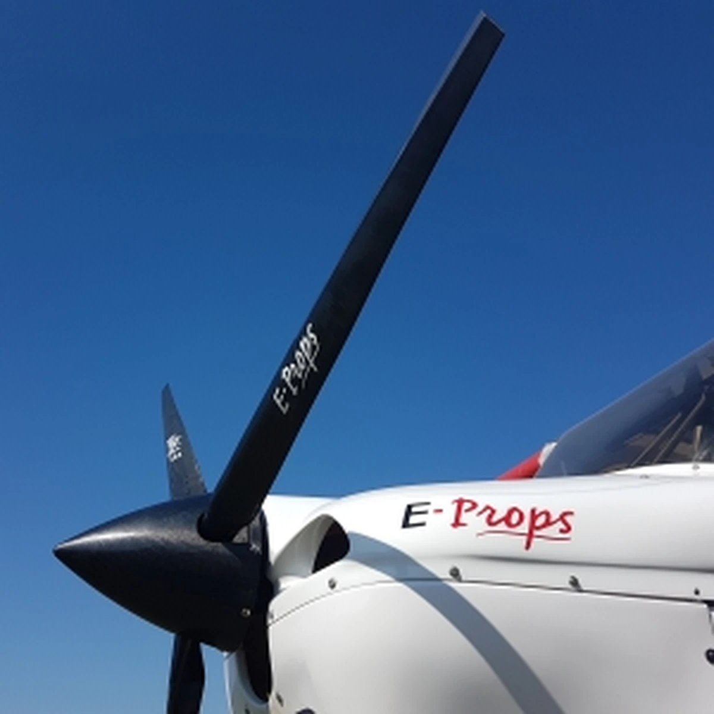
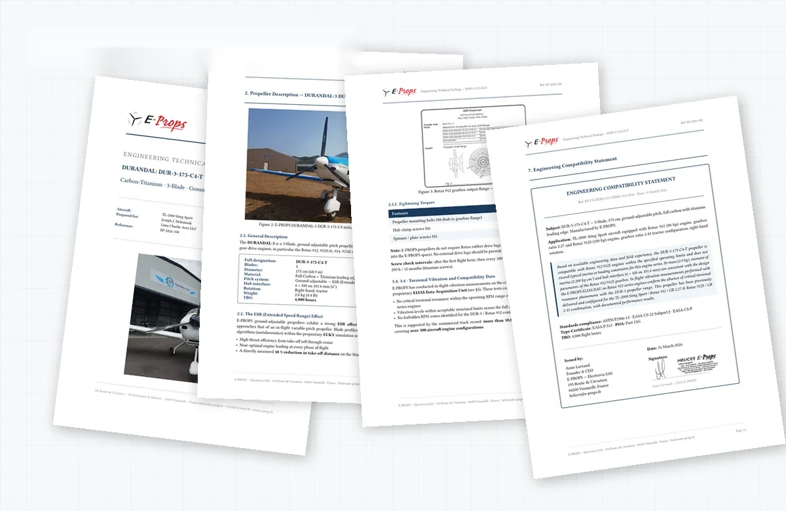
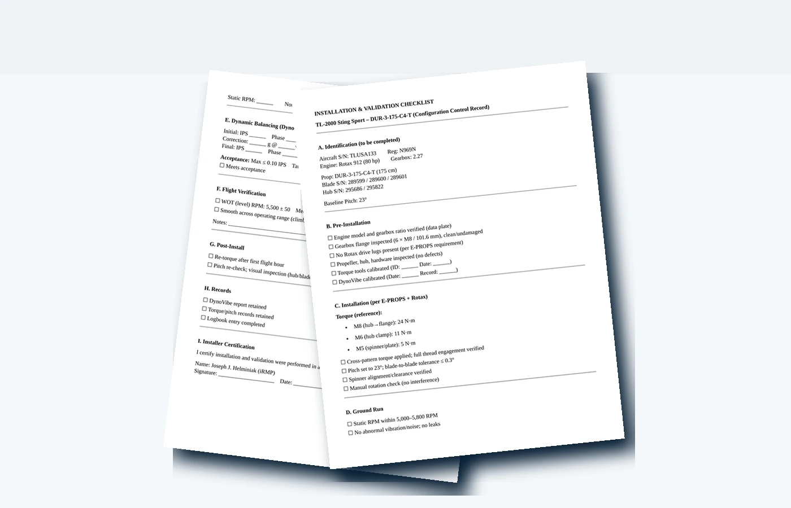
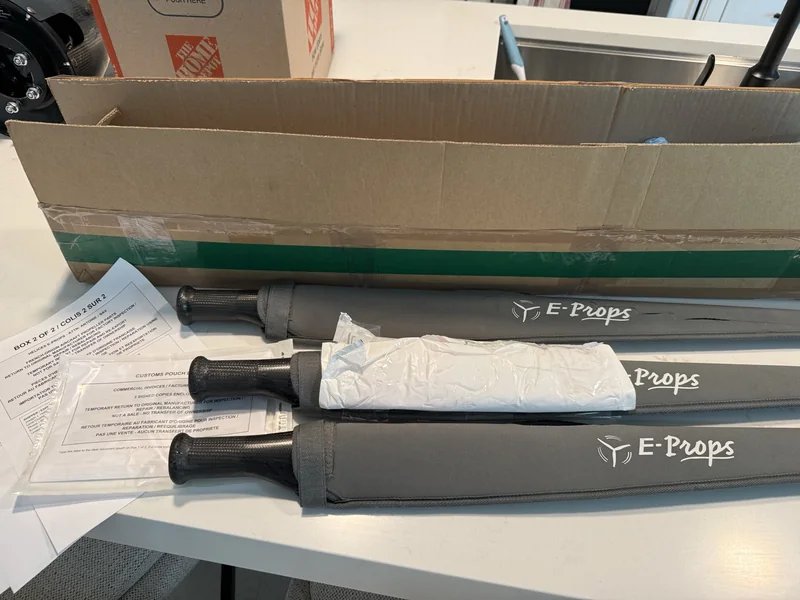
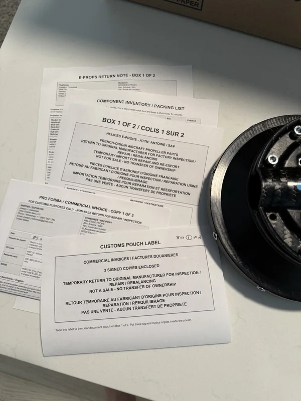
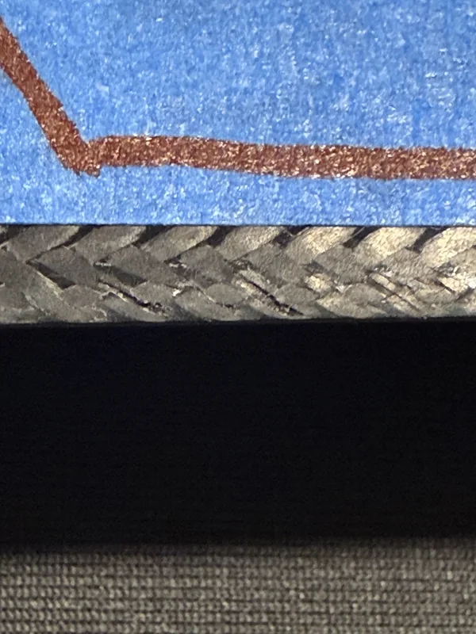
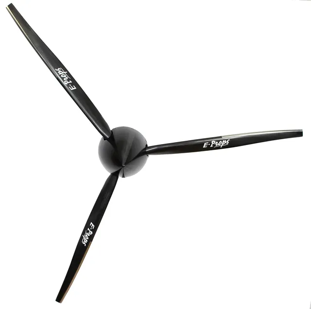
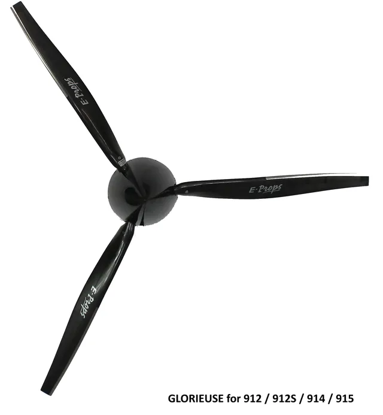
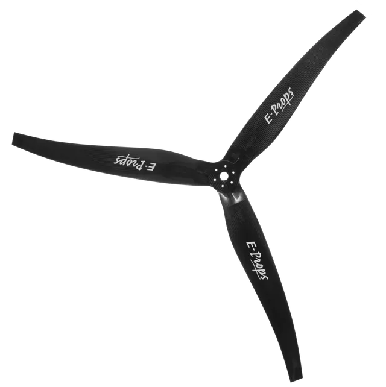

KAKH Propeller Support
E-PROPS Dealer & Service Center Support
At KAKH, Lima Charlie Aero supports
E-PROPS fitment, orders, setup, inspection,
warranty, repair, documentation,
and manufacturer coordination. Factory guidance,
overhaul, blade replacement, and manufacturer-level
decisions stay under E-PROPS instructions
or written direction where required.
E-PROPS propeller support
Fitment, S-LSA LOA, orders, and setup.Warranty, repair, and manufacturer
coordination. Decisions stay tied to configuration,
ROTAX details, records, E-PROPS procedures,
and written direction.

E-PROPS: Light is Right
Why E-PROPS is the Lightweight Performance Benchmark.
E-PROPS is not treated as a catalog swap. The value is lightweight carbon construction, titanium leading-edge protection, aircraft-specific blade geometry, low rotating mass, efficiency-focused design, and selection tied to the actual aircraft.
Already Decided on E-PROPS?
Start with Fitment, Documentation, and Order Readiness.
For owners already focused on E-PROPS, Lima Charlie Aero organizes the aircraft, engine, propeller, spinner, authorization, and installation details before the order is treated as final.
S-LSA Letter of Authorization Path
The Authorization Path is the First Technical Gate.
For an S-LSA aircraft, a propeller change is an aircraft configuration change, not a generic parts swap. Operating limitations, maintenance instructions, manufacturer support status, E-PROPS engineering data, proposed configuration, and records path need to align before installation planning is treated as ready.
Lima Charlie Aero builds the owner packet around the aircraft: make and serial number, engine and gearbox, current propeller and spinner, proposed E-PROPS line, installation checklist, photos, pitch and torque record plan, vibration follow-up plan, and authorization route.
Authorization Sequence
The preferred route is a manufacturer Letter of Authorization supported by an aircraft-specific engineering packet and installation checklist. If the manufacturer is unavailable or does not issue the authorization, the file may need case-by-case review through a person acceptable to the FAA, DAR/FAA input, operating-limitations requirements, and an aircraft-specific return-to-service or test plan.
- Confirm aircraft category before treating the propeller path as approved.
- Request or assemble the manufacturer review packet first.
- Keep E-PROPS engineering data, checklist records, photos, and aircraft records together.
- Document any FAA-acceptable alternative path separately from product selection and ordering.
Owner Support Path
E-PROPS Sales, Setup, Warranty, and Repair Support for U.S. Aircraft Owners.
Lima Charlie Aero keeps selection, configuration, order coordination, setup, inspection, warranty, repair, records, manufacturer coordination, and follow-up on one owner path.
E-PROPS currently organizes its product line around Durandal / Excalibur for ground-adjustable ROTAX gear-drive applications, Glorieuse for applicable in-flight variable-pitch ROTAX 9xx applications, Ascalon for supported Lycoming and Continental direct-drive applications, and PLUG'n'FLY for paramotor applications. A Jabiru-specific line is expected separately.
01 — Authorization First
Review certification category, S-LSA Letter of Authorization path, aircraft configuration, current propeller, performance goal, installation data, and documentation before any propeller path is treated as final.
02 — Order Coordination
Coordinate aircraft details, E-PROPS quote context, technical-form information, order communication, shipping/import questions, and owner updates.
03 — Setup, Inspection, Warranty Claim, and Repair Support
Support setup review, pitch and torque records, inspection, warranty claims, repair, vibration follow-up, owner intake, and post-sale questions inside the applicable work-scope boundary. Overhaul, blade replacement, and manufacturer-level decisions stay under E-PROPS instructions and written manufacturer direction where required.
Quote and Order Path
Production Starts After Payment Confirmation and the Completed Technical Form.
Lima Charlie Aero coordinates the aircraft data, E-PROPS quote context, technical-form information, order communication, shipping/import questions, and owner updates for orders handled through this support path.
A complete quote request starts with aircraft, engine, gearbox, requested propeller type, and diameter. After quote approval, payment confirmation and the completed technical form are sent before the propeller is released into production.
Complete aircraft data reduces back-and-forth before the quote and technical form path.
Production starts after E-PROPS receives payment confirmation and the required technical-form data.
Typical production timing communicated for distributor Durandal / Excalibur orders after the order package is complete.
Glorieuse orders are treated on a longer production timeline. Shipping, customs, and import timing are separate.
Engineering Packet and Checklist Records
A custom-built owner packet assembled from aircraft-specific data, installation details, checklist results, and supporting documentation.
Selection support keeps aircraft configuration, E-PROPS engineering material, manufacturer communication, checklist records, pitch or torque data, photos, vibration notes, and follow-up observations tied to the aircraft record path. When manufacturer authorization is not available, the same packet supports case-by-case review of any FAA-acceptable alternative path.

Aircraft / Engine Match
The propeller decision is tied to the actual aircraft and engine installation, not only the propeller model name.
Mechanical Compatibility
Mass, inertia, hub interface, pitch target, limits, and vibration context stay together before order planning.
Authorization Review Packet
Engineering material and checklist records can be sent for manufacturer review first, then retained for any case-by-case FAA-acceptable review path if manufacturer authorization is unavailable.
Traceable Owner File
Photos, packet pages, checklist records, torque/pitch values, and follow-up notes remain tied to the aircraft records trail.
Checklist-driven Installation Planning
Installation Planning is Treated as a Controlled Process.
The E-PROPS installation path is organized as a configuration-control record: identify aircraft, engine, gearbox, propeller, blade and hub serials; verify flange and hardware; set pitch; torque fasteners; run the engine; balance when required; verify flight RPM; and retain the records.
Engine / gearbox verified6 x M8 / 101.6 mm flange checkedM8 / M6 / M5 torque references retainedPitch and blade tolerance recordedStatic RPM and WOT RPM verifiedDynoVibe and logbook records retained

Traceability and Owner Support
Propeller Support Must Keep Hardware, Shipment, Paperwork, and Follow-up Connected.
Some propeller situations involve damage documentation, shipment planning, customs or import details, manufacturer communication, aircraft-manufacturer follow-up, installation planning, and after-service questions. Lima Charlie Aero keeps those steps in one traceable owner path.
Process Controls
- Document condition before the part leaves the aircraft.
- Keep packaging, return documentation, and import/export paperwork together when applicable.
- Preserve manufacturer communication and aircraft-manufacturer follow-up in the owner file.
- Connect installation planning, vibration context, and post-arrival questions to the same aircraft record path.



Fitment Controls
The Catalog Comes After the Aircraft.
Propeller selection begins with the aircraft and operating goal, not a model name alone.
Aircraft model and configurationEngine model and gearbox ratioRotation and tractor / pusher layoutDiameter and cowling clearanceCurrent propeller and spinnerClimb, cruise, STOL, noise, or weight goalAircraft manuals and installation dataVibration or performance concern
Product Family Overview
Match the E-PROPS Family to the Actual Application.
The product family identifies the conversation path. It does not establish aircraft fitment, S-LSA authorization, installation eligibility, or return-to-service requirements by itself.

Ground-adjustable
Durandal / Excalibur
Ground-adjustable support for appropriate ROTAX and gear-drive applications. Selection depends on engine, gearbox, rotation, clearance, mission, and documentation.

Variable pitch / constant speed
Glorieuse
Planning support for applicable ROTAX 9xx aircraft where aircraft compatibility, regulator or governor requirements, installation data, and owner goals support the path.

Direct-drive applications
Ascalon
Direct-drive application support where E-PROPS fitment applies. This is not presented as the default ROTAX 9 Series path unless the aircraft and engine application call for it.
Paramotor applications
Plug'n'fly
Paramotor-range support is handled as a separate E-PROPS product line and is not used as the default aircraft propeller path for ROTAX 9 Series airplanes.
Ready to Move from Interest to Fitment?
Request an E-PROPS Fitment Review Before the Order Path is Treated as Final.
Send the aircraft, engine, gearbox, current propeller, performance goal, photos, and authorization status. Lima Charlie Aero will identify the E-PROPS selection and documentation questions before the order is treated as ready.
Inquiry Checklist
Send the Aircraft Data First.
- Aircraft make, model, N-number, and certification category
- Engine model and gearbox ratio, if known
- Current propeller, diameter, blade count, and pitch, if known
- Spinner diameter and tractor / pusher configuration
- Performance goal: climb, cruise, STOL, economy, smoothness, noise, or weight
- Photos of the propeller, spinner, hub, cowling clearance, and data plates
- Current vibration or performance concern
- Aircraft manuals, operating limitations, and authorization documents available to the owner
Fitment is an Aircraft Decision.
Lima Charlie Aero identifies missing configuration, documentation, authorization, or installation questions before an order path is treated as settled.